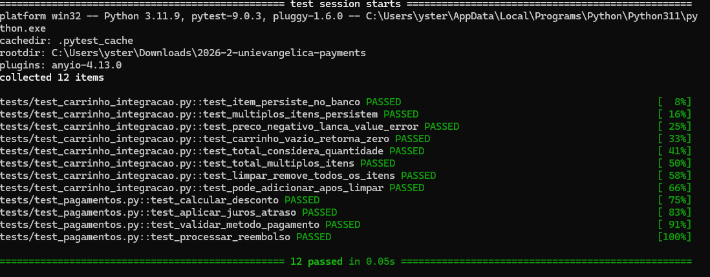

O :memory: do SQLite garante isolamento porque cada teste recebe um banco criado do zero na RAM, que desaparece completamente ao fechar a conexão — sem estado compartilhado entre testes e sem necessidade de limpar arquivos. Isso difere da abordagem de Stub/Mock usada em test_pagamentos.py, onde a dependência era simulada com valores fixos sem tocar nada real. No teste de integração com :memory:, o banco SQLite é real e executado de verdade, mas em ambiente descartável, garantindo isolamento sem fingir que ele existe.
https://github.com/BrunnoRa/2026-2-unievangelica-payments/tree/pratica11/Brunno_Rafael-2310130
O GitHub não permitiu criar um novo fork do repositório 2026-2-unievangelica-payments-7ob pois já existe um fork meu de um repositório anterior com nome similar. Ao tentar abrir o PR, o GitHub informou que os históricos de commits são completamente diferentes, impedindo a comparação. O código está disponível no link acima com todos os 8 testes passando.